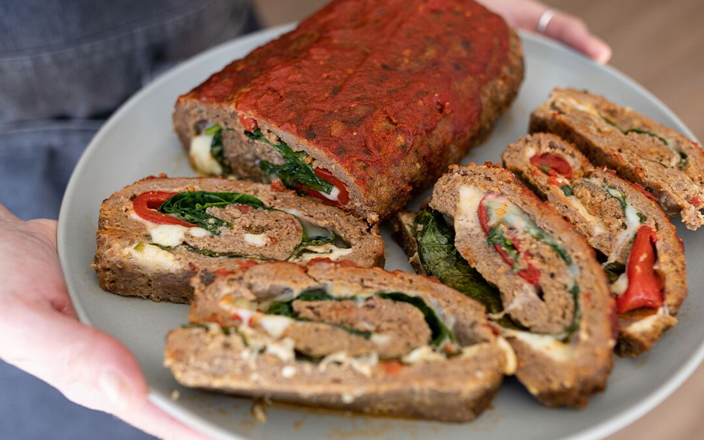

Meatloaf

- 2 pounds lean ground beef
- ½ pound fresh mushrooms, all minced except for 6
- ¾ cup fresh bread crumbs
- ½ cup minced onion
- ½ cup ketchup
- 2 eggs, beaten
- 1 ½ teaspoons salt
- ½ teaspoon ground black pepper
- Preheat oven to 350 degrees F (175 degrees C).
-
In a large mixing bowl, combine ground meat, minced mushrooms, bread
crumbs, onion, ketchup, eggs, and salt and pepper. Mix well. Spread
1/2 of the mixture into the bottom of a loaf pan. Arrange 6 whole
mushrooms stem down into meat. Top with rest of meat, patting to
combine both halves.
-
Bake for 1 hour and 45 minutes, or until done. Internal temperature
should measure 160 degrees F (70 degrees C) when done.